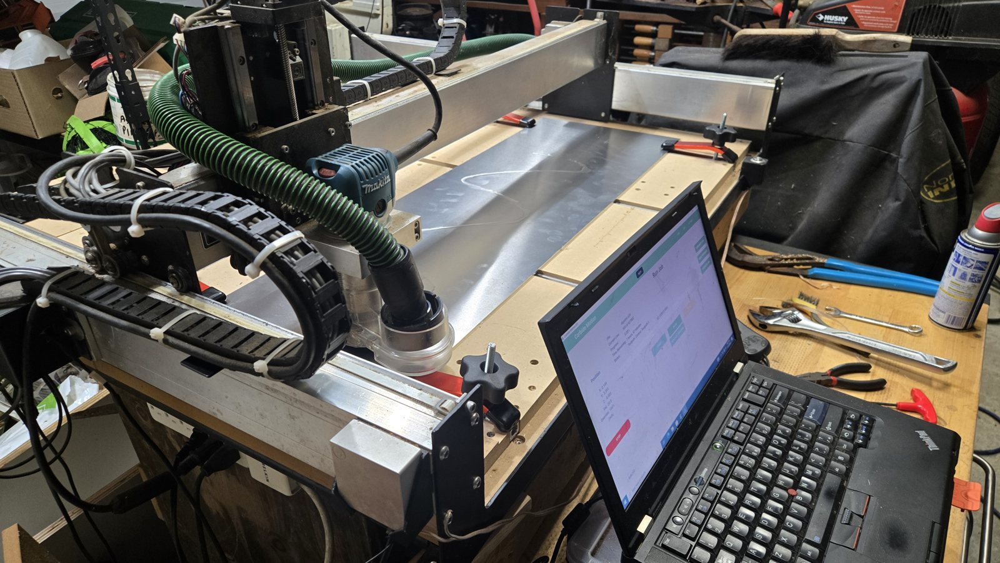

Robotics team CNC parts



I was called onto this project last minute by my friend, the president of the robotics club. He needed same-day turnaround, and we went through a few design iterations within a week, finishing on the day of the competition after pulling an all-nighter. The robot was built for DECODE, the 2025–26 FIRST Tech Challenge game. The third image shows our ball launcher, which had a moving hood to change the launch angle and a weighted flywheel with a custom PID controller to keep its speed on target. With two other friends, I wrote most of the code, and I also played a large part in assembling the robot. It had both a manual mode and an autonomous mode, which used the Limelight to aim at targets and adjust the flywheel speed and hood angle to hit them with wiffle balls, and it would ram against a wall to pick up balls (ball intake not pictured).